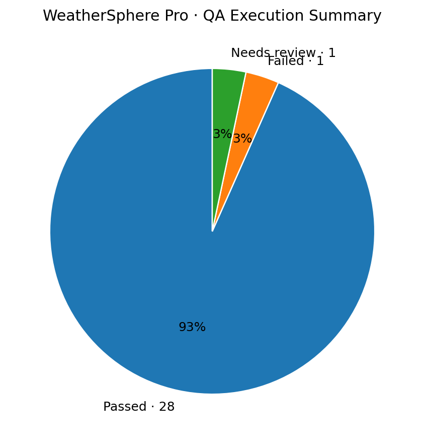
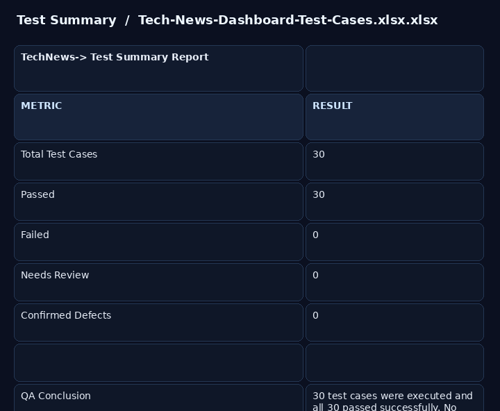

VIEW FULL
VIEW FULLQA Test Case Report
30 documented test cases covering city search, weather data, forecast, favorites, UI behavior and input handling.
30CASES28PASS01FAIL01REVIEW
Download Excel artifact ↓
I test web experiences, challenge edge cases, validate APIs and data, and turn unexpected behavior into clear, reproducible evidence.
FINAL-YEAR CSE · B.TECH 2023–2027
I'm a final-year Computer Science Engineering student building toward QA Engineer / Software Testing roles. My current hands-on stack combines manual testing fundamentals with API testing, SQL validation, Jira, browser DevTools, Git/GitHub and beginner Selenium automation.
I don't position myself as an automation expert yet. I position myself as a technically grounded fresher who can test systematically, communicate defects clearly and keep learning.
Recruiter-facing proof from my actual QA work: test-case documentation, defect reporting, execution summaries, case reports and visual evidence. Every preview below is a real artifact from the testing work.
VIEW FULL30 documented test cases covering city search, weather data, forecast, favorites, UI behavior and input handling.
 VIEW FULL
VIEW FULLThree documented defects with reproduction steps, expected vs actual results, severity, priority and status.

VIEW FULLVisual QA outcome: 28 passed, 1 failed and 1 case requiring review across 30 executed test cases.
Download source Excel ↓ VIEW FULL
VIEW FULLRecruiter-friendly report view showing the project, testing scope, execution summary and QA conclusion.
Download source Excel ↓ VIEW FULL
VIEW FULL30 documented test cases covering topic buttons, article data, navigation, infinite scrolling, loading and responsive behavior.

VIEW FULL30/30 planned cases passed with no confirmed defects in the completed testing cycle.
Download Excel evidence ↓ VIEW FULL
VIEW FULLThe public dashboard currently running on GitHub Pages. Use the live button to open the application and the GitHub button to inspect the source.
Responsive weather dashboard built with HTML, CSS and JavaScript. QA coverage included functionality, UI behavior, responsive behavior, input handling and user workflows.
Web-based technology news dashboard with topic browsing, article information, loading behavior, infinite scrolling and responsive UI. The documented QA cycle covered 30 scenarios with all planned cases passing.
Selected evidence from the testing work behind these projects.
WeatherSphere pass rate across 30 executed test cases.
Documented with severity, priority, reproduction steps and expected/actual results.
Postman practice with status, body, fields, values, headers and negative cases.
SELECT, filtering, sorting, COUNT, GROUP BY, JOIN and NULL validation for QA data checks.
Created, progressed, commented, retested and closed a defect through a workflow.
Beginner hands-on: locators, login flows, negative validation, dropdowns, assertions and explicit waits.
KCC Institute of Technology and Management · AKTU
CGPA 8.05 / 10Foundation Level in Programming and Data Science completed.
Foundation ✓Open to QA Engineer, Software Testing and Quality Engineering internships / fresher opportunities.